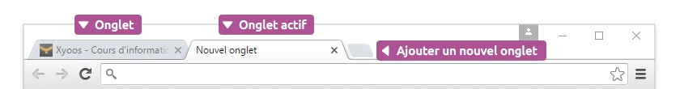

Les onglets (comme les onglets d’un classeur) permettent de naviguer sur plusieurs sites en même temps ce qui est très pratique lorsque vous voulez ouvrir un nouveau site tout en gardant le site actuel. Vous pouvez ouvrir autant d’onglets que vous le souhaitez.

À tout moment vous pouvez ouvrir un nouvel onglet en cliquant sur le bouton + sur Google Chrome ou Firefox par exemple. Le raccourci clavier pour cette action est CTRL+T (T pour tab, « onglet » en anglais).